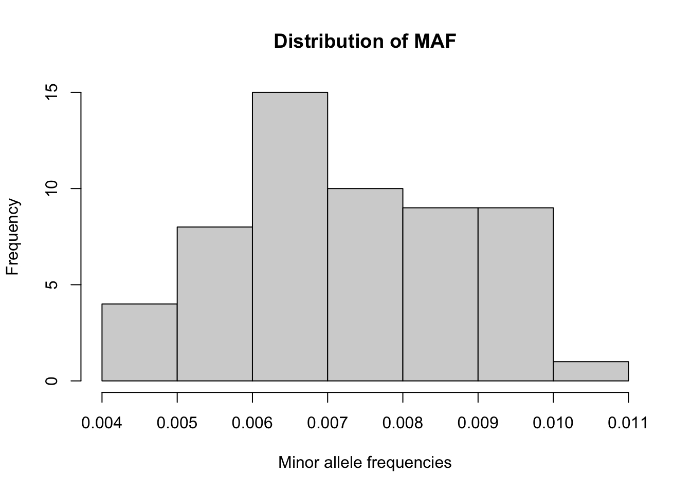
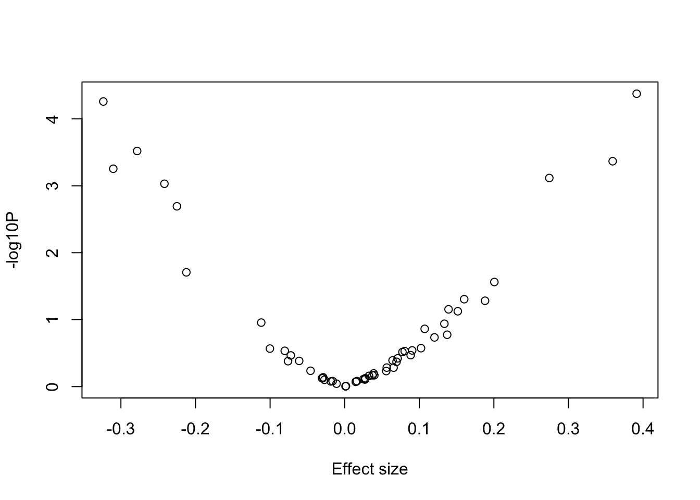
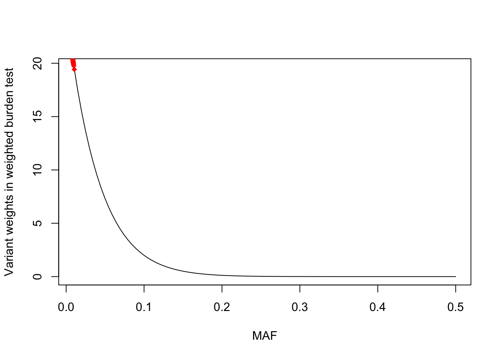
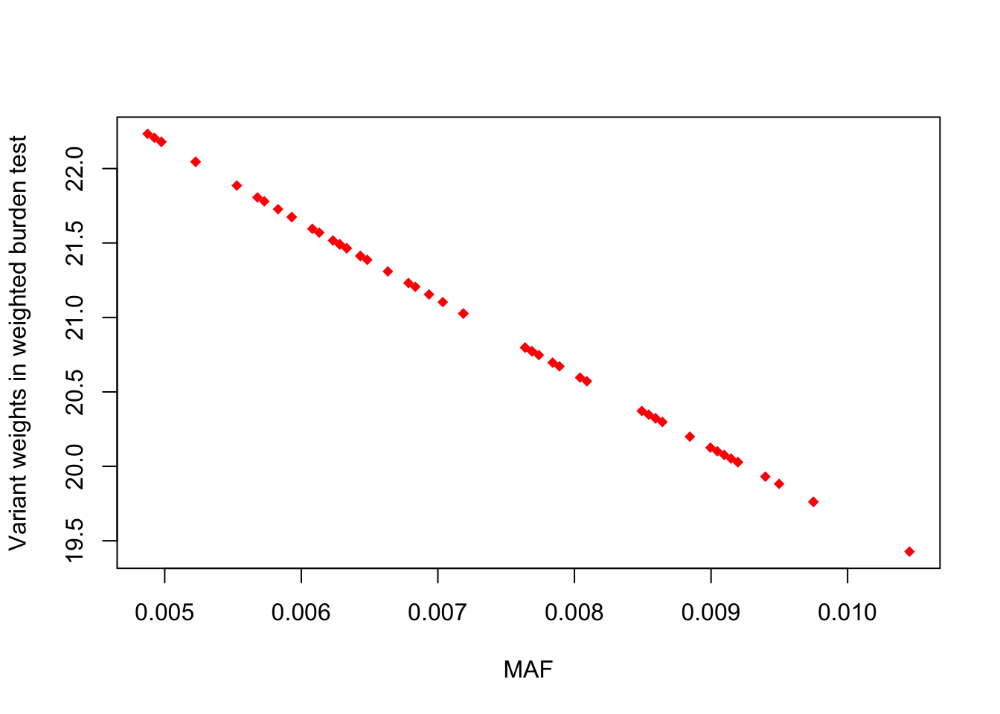

library(data.table)
library(dplyr)
library(BEDMatrix)
library(SKAT)
library(ACAT)
library(ggplot2)
library(glue)Practical 4 Key - Rare Variant Analysis
Before you begin:
- Make sure that R is installed on your computer
- For this lab, we will use the following R libraries:
Introduction
We will look into a dataset collected on a quantitative phenotype which was first analyzed through GWAS and a signal was detected in a region on chromosome 1. Let’s determine whether the signal is present when we focus on rare variation at the locus. In our analyses, we will define rare variants as those with \(MAF \leq 5\%\).
The file “rv_pheno.txt”” contains the phenotype measurements for a set of individuals and the file “rv_geno_chr1.bed” is a binary file in PLINK BED format with accompanying BIM and FAM files which contains the genotype data.
Data preparation
Let’s first load the files into the R session. We first need to define the path to the directory containing the phenotype and genotype files (change the path to the files location on your machine).
files_dir <- "/SISGM19/data/" Also specify the paths to the PLINK2 binary:
plink2_binary <- "/SISGM19/bin/plink2" We can now read the phenotype file:
pheno_file <- fread(glue("{files_dir}/rv_pheno.txt"), header = TRUE)
head(pheno_file, 3)Exercises
- Using PLINK, extract rare variants in a new PLINK BED file. We use options
--max-mafto select rare variants and--maj-ref forceso that the minor allele is the effect allele.
# first fill in the thresholds to use for each filter
filter_maf = 0.05
cmd <- glue('{plink2_binary} --bfile "{files_dir}/rv_geno_chr1" --max-maf {filter_maf} --maj-ref force --make-bed --out chr1_region_rv')
system(cmd)This generates a new set of PLINK BED genotype files containing only the variants that passed the MAF filter chr1_region_rv.{bed,bim,fam}.
- Import the data files in R.
- Read the genotype data using R function
BEDMatrix(). We use optionsimple_names = TRUEto easily filter by sample IDs later.
G <- BEDMatrix("chr1_region_rv", simple_names = TRUE)Extracting number of samples and rownames from chr1_region_rv.fam...Extracting number of variants and colnames from chr1_region_rv.bim...- Keep only samples who are present both in the genotype as well as phenotype data and who don’t have missing values for the phenotype.
# identify ID of samples with non-missing phenotypes
ids.keep <- with(pheno_file, IID[ !is.na(Pheno) ])
# subset the genotype & phenotype data based on IDs
G <- G[match(ids.keep, rownames(G)), ]
pheno_file <- pheno_file[match(ids.keep, pheno_file$IID), ] - Examine the genotype data:
- Compute the minor allele frequency (MAF) for each SNP and plot histogram. We use the
colMeans()function to G and specify the argument na.rm = TRUE in case missing genotypes are present.
# Recall the MAF formula: maf(g) = sum(g) / (2*N) = mean(g) / 2
maf <- colMeans(G, na.rm=TRUE)/2
# we can use the 'hist' function in R to plot histograms
hist(maf, xlab = "Minor allele frequencies", main = "Distribution of MAF")
- Run the single variant association tests in PLINK (only for the extracted variants).
cmd <- glue("{plink2_binary} --bfile chr1_region_rv --pheno {files_dir}/rv_pheno.txt --pheno-name Pheno --glm allow-no-covars --out test_plink")
system(cmd)
sv_pvals <- fread("test_plink.Pheno.glm.linear")
str(sv_pvals) # what variables are used to store p-values and effect sizes?Classes 'data.table' and 'data.frame': 56 obs. of 16 variables:
$ #CHROM : int 1 1 1 1 1 1 1 1 1 1 ...
$ POS : int 12030946 12032428 12057950 12095233 12100532 12110879 12121069 12137783 12137898 12143774 ...
$ ID : chr "1:12030946:T:C" "1:12032428:A:C" "1:12057950:C:T" "1:12095233:A:C" ...
$ REF : chr "C" "C" "T" "C" ...
$ ALT : chr "T" "A" "C" "A" ...
$ PROVISIONAL_REF?: chr "Y" "Y" "Y" "Y" ...
$ A1 : chr "T" "A" "C" "A" ...
$ OMITTED : chr "C" "C" "T" "C" ...
$ A1_FREQ : num 0.00498 0.00854 0.00789 0.00593 0.00628 ...
$ TEST : chr "ADD" "ADD" "ADD" "ADD" ...
$ OBS_CT : int 9949 9949 9949 9949 9949 9949 9949 9949 9949 9949 ...
$ BETA : num 0.0557 0.0642 -0.3236 -0.076 -0.1003 ...
$ SE : num 0.1021 0.0773 0.0802 0.0936 0.091 ...
$ T_STAT : num 0.546 0.831 -4.035 -0.812 -1.103 ...
$ P : num 0.585383 0.406254 0.000055 0.416873 0.270211 ...
$ ERRCODE : chr "." "." "." "." ...
- attr(*, ".internal.selfref")=<externalptr> - What would be your significance threshold after applying Bonferroni correction for the multiple tests (assume the nominal significance level is 0.05)? Is anything significant after this correction?
# determine the appropriate significance threshold
bonf_threshold <- 0.05 / length(sv_pvals$P)
bonf_threshold[1] 0.0008928571sv_pvals[ sv_pvals$P < bonf_threshold, ]- Make a volcano plot (i.e. plot log10 p-values against the effect sizes). Which of the Burden/SKAT/ACAT tests do you expect will give us most power?
with(sv_pvals, plot(x=BETA, y=-log10(sv_pvals$P), xlab = "Effect size", ylab = "-log10P")) 
- We will first compare three collapsing/burden approaches:
- CAST (Binary collapsing approach): for each individual, count if they have a rare allele at any of the sites
- MZ Test/GRANVIL (Count based collapsing): for each individual, count the total number of sites where a rare allele is present
- Weighted burden test: for each individual, take a weighted count of the rare alleles across sites (for the weights, use
weights <- dbeta(MAF, 1, 25))
For each approach, first need to generate the burden scores.
# CAST : count number of rare alleles for each person and determine if it is > 0
sum_alleles_per_sample <- rowSums(G)
burden.cast <- as.numeric( sum_alleles_per_sample > 0 )
# MZ : count number of sites with rare alleles for each person
burden.mz <- rowSums(G > 0)
# Weighted burden : weighted sum of genotype counts across sites
weights <- dbeta(maf, 1, 25)
burden.weighted <- G %*% weightsRun a test for association between the phenotype and each burden score using the lm() R function, e.g.
# e.g. for CAST
summary(lm(pheno_file$Pheno ~ burden.cast))
Call:
lm(formula = pheno_file$Pheno ~ burden.cast)
Residuals:
Min 1Q Median 3Q Max
-3.9531 -0.6880 0.0012 0.6822 3.6581
Coefficients:
Estimate Std. Error t value Pr(>|t|)
(Intercept) 0.002423 0.015317 0.158 0.874
burden.cast 0.017757 0.020422 0.870 0.385
Residual standard error: 1.01 on 9947 degrees of freedom
Multiple R-squared: 7.6e-05, Adjusted R-squared: -2.452e-05
F-statistic: 0.7561 on 1 and 9947 DF, p-value: 0.3846# for MZ
summary(lm(pheno_file$Pheno ~ burden.mz))
Call:
lm(formula = pheno_file$Pheno ~ burden.mz)
Residuals:
Min 1Q Median 3Q Max
-3.9521 -0.6894 -0.0013 0.6805 3.6591
Coefficients:
Estimate Std. Error t value Pr(>|t|)
(Intercept) 0.001444 0.013700 0.105 0.916
burden.mz 0.013492 0.011346 1.189 0.234
Residual standard error: 1.01 on 9947 degrees of freedom
Multiple R-squared: 0.0001421, Adjusted R-squared: 4.162e-05
F-statistic: 1.414 on 1 and 9947 DF, p-value: 0.2344# Weighted burden
summary(lm(pheno_file$Pheno ~ burden.weighted))
Call:
lm(formula = pheno_file$Pheno ~ burden.weighted)
Residuals:
Min 1Q Median 3Q Max
-3.9519 -0.6896 -0.0014 0.6804 3.6593
Coefficients:
Estimate Std. Error t value Pr(>|t|)
(Intercept) 0.0012244 0.0136778 0.090 0.929
burden.weighted 0.0006577 0.0005402 1.217 0.223
Residual standard error: 1.01 on 9947 degrees of freedom
Multiple R-squared: 0.000149, Adjusted R-squared: 4.846e-05
F-statistic: 1.482 on 1 and 9947 DF, p-value: 0.2235Looking further at the weighted burden variant weights
# across a wide MAF range
maf_ranges <- seq(.01,.5, length=100)
plot(dbeta(maf_ranges, 1, 25) ~ maf_ranges, type = "l", xlab = "MAF", ylab = "Variant weights in weighted burden test")
points(weights ~ maf, col = "red", pch = 18)
# only looking at variants in the data
plot(weights ~ maf, col = "red", pch = 18, xlab = "MAF", ylab = "Variant weights in weighted burden test")
- Now use SKAT to test for an association.
# first fit the null model
skat.null <- SKAT_Null_Model( pheno_file$Pheno ~ 1 , out_type = "C")
# Run SKAT association test (returns a list - p-value is in `$p.value`)
skat_sumstats <- SKAT(G, skat.null )
str(skat_sumstats)List of 7
$ p.value : num 8.75e-11
$ p.value.resampling: NULL
$ Test.Type : chr "davies"
$ Q : num [1, 1] 4833265
$ param :List of 4
..$ liu_pval : num 8.75e-11
..$ Is_Converged : num 0
..$ n.marker : int 56
..$ n.marker.test: int 56
$ pval.zero.msg : NULL
$ test.snp.mac : Named num [1:56] 99 170 157 118 125 161 126 160 114 125 ...
..- attr(*, "names")= chr [1:56] "1:12030946:T:C" "1:12032428:A:C" "1:12057950:C:T" "1:12095233:A:C" ...
- attr(*, "class")= chr "SKAT_OUT"skat_sumstats$p.value[1] 8.745405e-11- Run the omnibus SKAT, but consider setting \(\rho\) (i.e.
r.corr) to 0 and then 1.
- Compare the results to using the CAST,MZ/GRANVIL and Weighted burden collapsing approaches in Question 5 as well as SKAT in Question 6. What tests do these \(\rho\) values correspond to?
# Example for rho = 0
rho <- 0
skat_sumstats_rho <- SKAT(G, skat.null, r.corr = rho )
skat_sumstats_rho$p.value # = SKAT test[1] 8.745405e-11rho <- 1
skat_sumstats_rho <- SKAT(G, skat.null, r.corr = rho )
skat_sumstats_rho$p.value # = weighted burden test[1] 0.2234603- Now consider the omnibus version of SKAT, but use the “optimal.adj” approach which searches across a range of rho values.
# Run SKATO association test using grid of rho values
skat_sumstats_rho_grid <- SKAT(G, skat.null, method="optimal.adj")
skat_sumstats_rho_grid$p.value[1] 6.121784e-10- Run ACATV on the single variant p-values. The basic command would look like
# `weights` vector is from Question 5
acat.weights <- weights * weights * maf * (1 - maf)
ACAT(sv_pvals$P, weights = acat.weights)[1] 0.00112117- Run ACATO combining the SKAT and BURDEN p-values (from Question 7) with the ACATV p-value (from Question 9).
# Fill in the p-values
SKAT_pvalue <- 8.745405e-11
Burden_pvalue <- 0.2234603
ACATV_pvalue <- 0.00112117
# compute ACATO
ACAT( c(SKAT_pvalue, Burden_pvalue, ACATV_pvalue) )[1] 2.623621e-10Extra
You can explore the impact of different genetic architectures by analyzing 3 simulated phenotypes in “data/rv_pheno_extended.txt”. More specifically, you can run the same analyses done above for each of these traits and compare the performance of the tests relative to how variant effects were simulated:
- “Pheno_sparse”: a single causal variant (i.e. sparse genetic architecture)
- “Pheno_burden_skat”: 60% of the variant are causal, and they all have positive effects on the trait
- “Pheno_skat”: 20% of the variants are causal and the effect direction (+/-) is randomly assigned
Here is R code used to generate the phenotypes:
G <- BEDMatrix::BEDMatrix("data/rv_geno_chr1", simple_names = TRUE)
N <- nrow(G)
nsnps <- ncol(G)
# Parameters to change
# sparse : set n.causal = 1
# burden_skat : set prop_causal=0.6 and prop_pos_beta=1
# skat : set prop_causal=0.2 and prop_pos_beta=0.5
prop_causal <- 1
prop_pos_beta <- 1
h2g <- 0.01
n.causal <- round(nsnps * prop_causal)
causal.index <- sample(ncol(G), n.causal)
b_snp <- sqrt(h2g/n.causal)
beta <- rep(b_snp, n.causal)
beta_sign <- sample(c(rep(1, round(n.causal * prop_pos_beta)), rep(-1, n.causal - round(n.causal * prop_pos_beta))))
h2e <- 1 - h2g
y <- scale(G[, causal.index]) %*% beta + rnorm(N, sd = sqrt(h2e))Key Takeaways from This Practical
Concepts you should understand:
- Single-SNP power problem: Rare variants → few carriers → low power for individual tests
- Burden tests assume direction: All variants contribute same direction (often positive effect)
- SKAT assumes variance: Tests if variants deviate from null; allows mixed directions
- Omnibus tests combine: SKAT-O searches across architectures; ACAT combines different tests
- Weighting matters: Downweighting common variants focuses signal on rare variants
Method selection guide:
- All positive effects? → Burden test works best
- Mixed directions? → SKAT/variance-component test
- Unknown? → Omnibus test (SKAT-O or ACAT)
Important limitations:
- All methods assume variants in same gene/region
- Collapsing can lose power if only subset of variants causal
- LD structure can affect weights and power
Next session: We’ll combine results across multiple studies to increase power through meta-analysis.